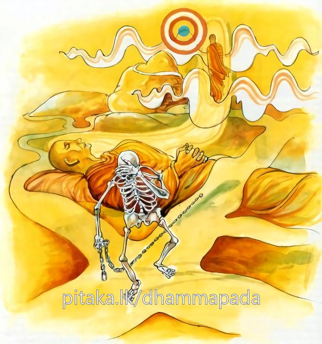

4-11 එකොළොස්වන ගෝධික තෙරුන්ගේ පරිනිර්වාණ වස්තුවයි.
මෙම කතාව සද්ධර්ම සාගරයෙන් ද කියවන්න.
තෙසං සම්පන්නසීලානං අප්පමාදවිහාරිනං
සම්මදඤ්ඤා විමුත්තානං මාරො මග්ගං න වින්දති.
පිරිපුන් සිල් ඇති, සිහියෙන් යුතු විසුම් ඇති, මනා කොට සිවු සස් දැන සියලු කෙලෙසුන්ගෙන් මිදුනු ඔවුන් ගිය මඟ මාර තෙම නොදනී.

තෙසං සම්පන්නං සීලානං ආදි මේ ධර්මදේශනාව ශාස්තෘන්වහන්සේ වේළුවනයෙහි වාසයකරන කාලයෙහි ගෝධික තෙරුන්ගේ පිරිනිවන්පෑම අරභයා දෙසූසේක.
ඒ ආයුෂ්මතුන්වහන්සේ ඉසිගිලි පර්වතය අසළ කළුගල්තලාවක වාසය කරන කාලයෙහි අප්රමාදීව කෙලෙස් තවන වීර්යයෙන් ආත්ම කල්පනාවලින් තොරව, සමාධියට සමවැදී, චිත්තවිමුක්තියට පැමිණියේ නමුත් එක් ආභ්යන්තරික රෝගයක හේතුවෙන් ඒ සමාධියෙන් පිරිහුණාහුය. උන්වහන්සේ මෙසේ දෙවෙනි තෙවෙනි ආදි වශයෙන් සය වාරයක්ම ධ්යාන උපදවාගෙන, මම දැන් සයවාරයක්ම ධ්යාන ලබා එයින් පිරිහුණෙමි, ධ්යානයෙන් පිරිහෙන්නාගේ ඊළඟ උත්පත්තිය අනියතය. දැන් මම ආයුධයක් ප්රයෝජනයට ගන්නෙමියි කෙස්කපන කඩකැත්ත ගෙන ගළනාළය සිඳගැනීමට පුටුවෙහි වාඩිවූහ.
මේ දුටු මාරයා, උන්වහන්සේගේ සිතත් දැක මේ භික්ෂුව සැතක් ගනිමියි සිතයි. සැතක් අතට ගත්පසු ජීවිතය ගැන කළකිරෙයි. ඒ අය විපස්සනා වඩා රහත් වන්නාහුය. දැන් මම මෙය වළක්වන්නට ගියහොත් මගේ වචනය භාර නොගැනීමටද පුළුවන. බුදුන් ලවාම වළක්වන්නෙමියි අමුතු වෙසක් මවාගෙන බුදුන් හමුවට ගොස්-
මහා වීරය මහා නුවණැති
ඉද්ධිබල ඇති කිසි බියක් නැති
යමක් කියිනා පිණිස ආවෙමි
ඔබේ පා පිණිපා කරන්නෙමි
හිමියනි ඔබගේ සවුවෙක්
මරණ මුවට පැමිණ සිටී
මරණයටම සිත මෙහෙයයි
එය වළකාලනු මැනවී
සසුන්කෙතේ සිත ඇලවූ
රහත්නොවූ ඔබෙ සවුවෙක්
යම්හෙයකින් මිය ගියහොත්
ඔහුට කුමක් සිදුවෙයිදෝ
යන ආකාරයෙන් අසා සිටියේය. ඒ වේලාවේ තෙරණුවෝ කඩකැත්ත අතට ගෙන සිටියේය. බුදුරජාණන්වහන්සේ මොහු මාරයායයි දැන මේ ගාථාව වදාළහ.
දිරිය ඇති මේ වැනි සවුවෝ දිවිය නොතකති
තණ්හාව මුළුසුන් කොට පිරිනිවියේය ගෝධික
ඉන්පසු භාග්යවතුන්වහන්සේ භික්ෂූන්වහන්සේලාද සමඟ කඩකැත්තද රැගෙන උන්වහන්සේ හොත්තැනට වැඩියහ. ඒවේලෙහි පාපී මාරයා මොහුගේ ප්රතිසන්ධිවිඥානය (ඉපදීම) කොහේදැයි දුම්රාශියක් මෙන්ද අඳුරුපිඬක් මෙන්ද වී සියලු දිසාවන්හි පැතිර සොයන්නට විය. භාග්යවතුන් වහන්සේ ඒ දුම හා අඳුර භික්ෂූන්ට පෙන්වා, මහණෙනි, මේ පාපීමාරයා ගෝධික කුලපුත්රයාගේ උපන්තැන සොයා ඇවිදියි. ගෝධික කුලපුත්රයාගේ ප්රතිසන්ධිවිඥානය කොහේවත් නොපිහිටා ඔහු පිරිනිවන් පෑවේය.
මාරයාද උන්වහන්සේගේ ප්රතිසන්ධිවිඥානය දැකගනු නොහැකිව කුමාරයෙකුගේ වෙසක් ගෙන බේලුවපණ්ඩු නම් වීනාවක් රැගෙන බුදුන් වෙත එළඹ මෙසේ විචාළේය.
උඩ යට සරසටද දිසා විදිසා හැමතැන
ගෝධික සොයා බැලුවෙමි ඔහු ආගිය අතක් නුදුටිමි
ඉන්පසු භාග්යවතුන්වහන්සේ මෙසේ වදාළහ:
වීරවත් ගති හා දැහැන් සුවයෙහි නියැළුණු
දිවිය ගැන නොතකා දිවරෑ භාවනා කළ
මරබලය බිඳහළ නැවත ඉපදුම නැති කළ
තණ්හාව මැඩ ගෝධික පිරිනිවනට පැමිණියේ
(මෙසේ කී කල පව්කාර මාරයා බුදුරදුන්ට මේ ගාථාව කීවේය.)
ශෝකයෙන් පීඩිත මරුගෙ වීණාව හැළුණේ
දුකටපත් ඒ මරතෙම අතුරුදන්විය එතැනම
ශාස්තෘන්වහන්සේත්, පව්කාර මාරය, ගෝධික කුලපුත්රයාගේ උපන් තැන තා වැන්නවුන් සියයක් දහසක් බැලුවත් දැකගත නොහැකියයි වදාරා මේ ගාථාවද ප්රකාශ කළහ.
එබඳු සිල් හා සිහිඇති සම්දිටු මිදුණු සිත්ඇති
උතුමන් ගිය නිවන්මග මරුට කිසිදා නොපෙනේ
එහි තෙසං යනු කිසියම් තැනක නොපිහිටන විඤ්ඤාණය ඇති හෙවත් වෙනත් තැනක නූපදිනසුලු ගෝධික කුලපුත් තෙමේ පිරිනිවුණේමය, මෙසේ පිරිනිවීම වෙයි. තෙසං සම්පන්න සීලානං යනු සම්පූර්ණ සිල්වතුන්ගේ අප්පමාද විහාරිනං යනු සිහිය විසිරයන්නට නොදී එම අප්රමාදයෙන් වාසයකරන්නන්හටයි. සම්මදඤ්ඤා විමුත්තානං යනු හේතුවශයෙන් නයවශයෙන් කාරණා වශයෙන් දැනගෙන. තදංග වික්ඛම්භන - සමුච්ඡේද පටිප්පස්සද්ධි - නිස්සරණ යන පස් වැදෑරුම් විමුක්තිවලින්ම මිදීමයි. මාරො මග්ගං න වින්දති යනු මෙබඳු වූ මහා ක්ෂීණාශ්රවයන්ගේ සියලු වීර්යයෙන් ගියමගෙහි අන්තර හෙවත් අවසානය මාරයාට නොපෙනෙයි, දැකගත නොහැකි වෙයි. අවබෝධ නොවෙයි.
දේශනාවසානයෙහි බොහෝදෙනා සෝවාන්ඵලාදියට පැමිණියාහුය. දේශනාව මහාජනයාට සාර්ථක විය.